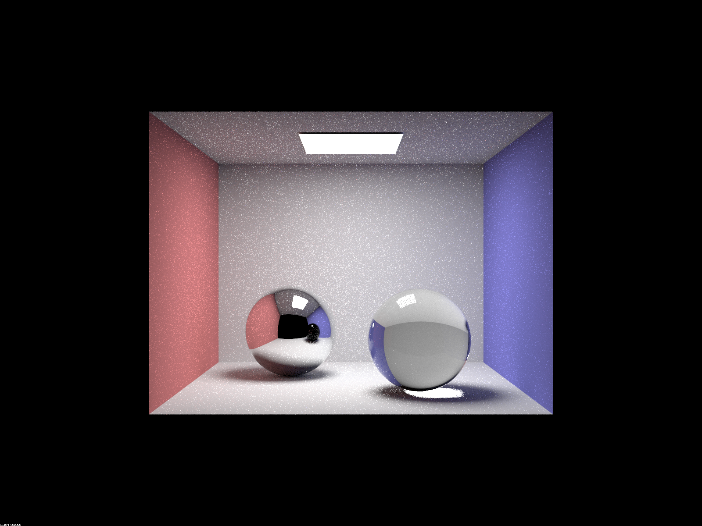

Overview
In this project, we added additional features to our ray tracer such as more complicated materials, and environment lights. We implemented mirror and glass models with both reflection and refraction. We also implemented an infinite environment light, which is a light that supplies incident radiance from all directions on the sphere.
Part 1. Mirror and Glass Materials
Show a sequence of six images of scene `CBspheres.dae` rendered with `max_ray_depth` set to 0, 1, 2, 3, 4, 5, and 100. The other settings should be at least 64 samples per pixel and 4 samples per light. Make sure to include all screenshots.
The following 6 images show CBspheres.dae with 64 samples per pixel and 4 samples per light.
|
|
|
|
|

|
|
|
|
|
|
Point out the new multibounce effects that appear in each image.
If max_ray_depth is set to 0 (no light bounce), the box is black except at the ceiling.
If max_ray_depth is 1, the light from the source hits the top surface of the spheres before entering the camera. The image is brighter.
If max_ray_depth is 2, we can see the reflection from the mirror sphere. The image is brighter overall.
If max_ray_depth is 3, we can see the mirror sphere and glass sphere. We can see the light under
the glass sphere. The light from the source hits the top surface of the glass sphere and then hits the bottom surface of the
sphere. The glass sphere refracts light on the floor.
If max_ray_depth is 4, we can see the light on the wall. The light from the source hits the top
surface of the glass sphere and then hits the bottom surface of the sphere. The glass sphere refracts light on the floor the wall.
If max_ray_depth is 5, the image is brighter as there are more bounces of light.
There is not a significant difference when the max_ray_depth = 5 and max_ray_depth = 100.
Explain how these bounce numbers relate to the particular effects that appear. Make sure to include all screenshots.
When max_ray_depth is 0, only zero bounce illumination occurs. Therefore, the image is black except at the ceiling.
When max_ray_depth is 1, the light will hit the top surface of the spheres. We can see the reflection of the light on the surface of the spheres. There is one bounce in total.
When max_ray_depth is 2, the light will hit the top surface of the mirror sphere and exit out of the sphere. Therefore, we can see the
reflection at the bottom half of the mirror sphere.
When max_ray_depth is 3, the light will hit the top surface of the glass sphere, exit out of the sphere, and hit onto the floor. Therefore, we can see the light on the floor that is refracted by
the glass sphere. There are 3 bounces in total.
When max_ray_depth is 4, the light will hit the top surface of the glass sphere, exit out of the sphere, hit onto the floor, and then hit onto the wall. Now, we can see the light on the wall. There are 4
bounces in total.
When max_ray_depth is 5, the image is similar to the image that has max_ray_depht = 4. However, it's a bit brigther as there are more bounces of light.
There is not a significant difference when the max_ray_depth = 5 and max_ray_depth = 100. This occurs because Russian Roulette will terminate early.
Part 3. Environment Lightl
Pick one *.exr* file to use for all subparts here. Include a converted *.jpg* of it in your website so we know what map you are using.In a few sentences, explain the ideas behind environment lighting (i.e. why we do it/how it works).
In part 3, we implemented an infinite environment light. An infinite environment light is a light that supplies incident radiance from all directions on the sphere. Additionally, the light source is thought to be infinitely far away. We use infinite environment lights because they give a realisitic representation of lighting in the real world. For example, lighting from the sun can be represented by an infinite environment light. In order to calculate the radiance from an infinite environment light, we take a x-y coordinate within the scene. This x-y coordinate is then converted to a ray direction. Since the energy provided by an environment light source is concentrated in directions toward bright light sources, the pixels are biased based on the amount of light they should receive. This phenomenon is captured by the pdf_env map table which gives the probability density for sampling each pixel.
Show the *probability_debug.png* file for the *.exr* file you are using, generated using the `save_probability_debug()` helper function after initializing your probability distributions.
The following image is the probability_debug.png file for the field.exr file.

|
Use the `bunny_unlit.dae` scene and your environment map *.exr* file and render two pictures, one with uniform sampling and one with importance sampling. Use 4 samples per pixel and 64 samples per light in each. Compare noise levels. Make sure to include all screenshots.
The following two images show bunny_unlit.dae with field.exr rendered with uniform sampling and importance sampling. Both images were rendered with 4 samples per pixel, 64 samples per light, and a maximum ray depth of 7. The images have similar amounts of noise. In addition, certain parts of the bunny appear brighter in importance sampling. This makes sense because light should be concentraed in certain areas due to importance sampling.
|
|
|
Use a different image (if you did part 2, we recommend `bunny_microfacet_cu_unlit.dae`) and your environment map *.exr* file and render two pictures, one with uniform sampling and one with importance sampling. Use 4 samples per pixel and 64 samples per light in each. Compare noise levels. Make sure to include all screenshots.
The following images show bunny_microfacet_cu_unlit.dae with field.exr rendered with uniform and importance sampling. The images were rendered with 4 samples per pixel, 64 samples per light, and a maximum ray depth of 7. The image with uniform sampling is noisier.
|
|
|
Collaboration:
We collaborated on this project by splitting the work. Truc worked on Part 1, and Derwin worked on part 3.